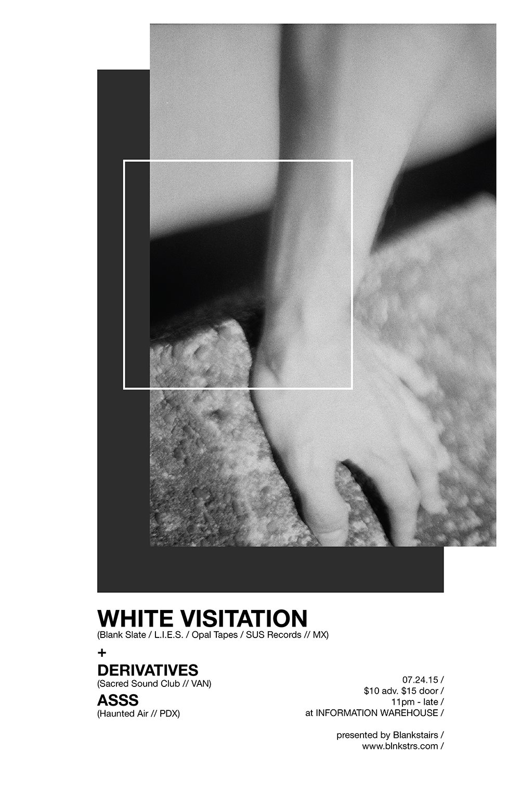

ASSS

ASSS - 100ep
ASSS, 100ep is now available! Copies can be purchased through us, directly from Details Sound,
or from:
boomkat.com (sold out)
juno.co.uk
redeyerecords.co.uk
"The 100 EP is twenty minutes of dark, intensely textured beats and smashed-up washes; heavy, hard-hitting techno on the borders of noise and industrial."
-Flora Pitrolo, junodownload
posted on 8 December, 2015
Una entrivista con ASSS
We had a chat with Sofia Acosta for 8106.tv. During the conversation we discussed our past and present, gear, influences, and our creative process. You can read it by clicking the link below, and be sure to check out some of Sofia's other work at her soundcloud page.
Una Entrivista Con ASSS - Improvisación y Techno Análogo
posted on 5 August, 2015
White Visitation (MX) & Derivatives (CA)
We're performing new material with White Visitation and Derivatives for the Blankstairs Summer party on 24, July 2015.
posted on 20 July, 2015
ASSS & Derrick May
We're very excited to be supporting thee innovator, Derrick May, here in Portland on July 11th.
posted on 22 June, 2015